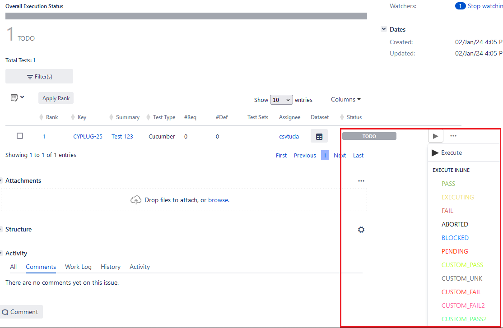
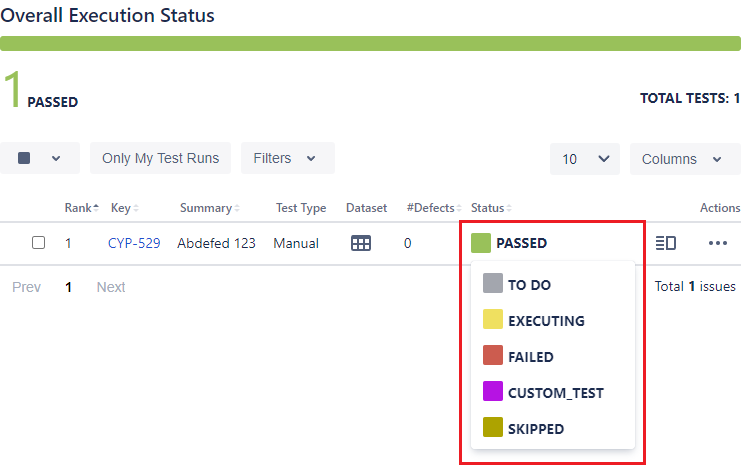
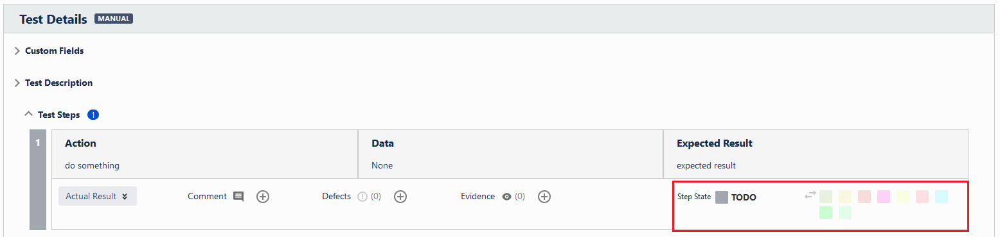
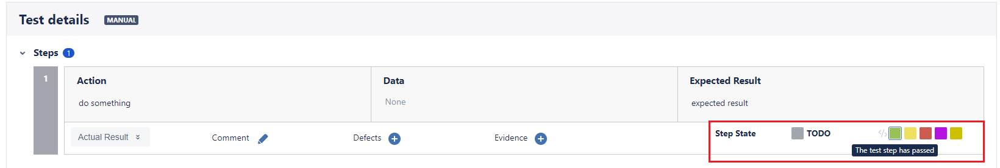

Xray⚓︎
You can provide a bunch of Xray settings which might become necessary depending on your project configuration.
Optional settings⚓︎
status⚓︎
These status options represent the mapping of Cypress statuses to corresponding Xray test statuses. If you have custom test statuses set up in Xray, you should specify their names here.


Info
For more information on test statuses, please refer to the official documentation:
aggregate⚓︎
A function that returns a single Xray status for a given combination of Cypress statuses. It is used to determine the final status of retried and data-driven tests and is never called for tests that have only been run once.
Info
Tests are grouped by the issue keys present in their describe() and it() titles as described here.
- Type
function
Default
Example
The following example defines custom FLAKY and ABORTED statuses for iterated tests:
failed⚓︎
The Xray status name of a test marked as failed by Cypress.
- Environment variable
XRAY_STATUS_FAILED- Type
string- Default
"FAIL"(when providing Xray server credentials)"FAILED"(when providing Xray cloud credentials)
Example
passed⚓︎
The Xray status name of a test marked as passed by Cypress.
- Environment variable
XRAY_STATUS_PASSED- Type
string- Default
"PASS"(when providing Xray server credentials)"PASSED"(when providing Xray cloud credentials)
Example
pending⚓︎
The Xray status name of a test marked as pending by Cypress.
- Environment variable
XRAY_STATUS_PENDING- Type
string- Default
"TODO"(when providing Xray server credentials)"TO DO"(when providing Xray cloud credentials)
Example
skipped⚓︎
The Xray status name of a test marked as skipped by Cypress.
- Environment variable
XRAY_STATUS_SKIPPED- Type
string- Default
"FAIL"(when providing Xray server credentials)-
"FAILED"(when providing Xray cloud credentials)Note
Defaults to
"FAILED"because Cypress only skips test cases if errors occur, as described here.
Example
step⚓︎
These status options represent the mapping of step statuses to corresponding Xray step statuses. If you have custom statuses set up in Xray, you should specify their names here.


Info
For more information on test step statuses, please refer to the official documentation:
Note
These are currently only accessed in Cucumber report conversion. If you're not using Cucumber in your project, you can safely ignore them.
failed⚓︎
The Xray status name of a step marked as failed.
- Environment variable
XRAY_STATUS_STEP_FAILED- Type
string- Default
undefined
Example
passed⚓︎
The Xray status name of a step marked as passed.
- Environment variable
XRAY_STATUS_STEP_PASSED- Type
string- Default
undefined
Example
pending⚓︎
The Xray status name of a step marked as pending.
- Environment variable
XRAY_STATUS_STEP_PENDING- Type
string- Default
undefined
Example
skipped⚓︎
The Xray status name of a step marked as skipped.
- Environment variable
XRAY_STATUS_STEP_SKIPPED- Type
string- Default
undefined
Example
testEnvironments⚓︎
The test environments for test execution issues. These will be used as follows:
- if the plugin creates new test execution issues, they will be associated with the issue
- if the plugin reuses existing test execution issues, they will either:
- replace existing test environments
- be added if the issue does not yet have any test environments associated
Note
Xray's API only allows replacing test environments in the plugin's scope. It is not possible to completely remove all existing test environments during result upload. Completely removing all existing environments needs to be done manually.
This means that you will always need to specify one or more test environments to replace all existing ones, or leave them as is by omitting the option entirely.
For more information about working with test environments, make sure to check out the documentation for Xray server or Xray cloud.
- Environment variable
XRAY_TEST_ENVIRONMENTS- Type
string[]- Default
undefined
Example
uploadRequests⚓︎
Enables or disables the upload of manually executed requests using cy.request.
If true, requests and responses will be attached to the corresponding test as evidence.
If false or left undefined, neither requests nor responses are attached.
Note
For this option to work properly, you need to overwrite the cy.request command.
- Environment variable
XRAY_UPLOAD_REQUESTS- Type
boolean- Default
false
Example
uploadResults⚓︎
Turns execution results upload on or off. Useful when switching upload on or off from the command line (via environment variables).
- Environment variable
XRAY_UPLOAD_RESULTS- Type
boolean- Default
true
Example
uploadScreenshots⚓︎
Turns on or off the upload of screenshots Cypress takes during test execution.
Note
This option only takes effect once uploadResults is turned on.
It is not possible to upload screenshots without uploading results.
- Environment variable
XRAY_UPLOAD_SCREENSHOTS- Type
boolean- Default
true
Example
url⚓︎
The Xray base URL to use. For more information please refer to the official documentation:
- Environment variable
XRAY_URL- Type
string- Default
jira.urlfor Xray server andhttps://xray.cloud.getxray.appfor Xray cloud